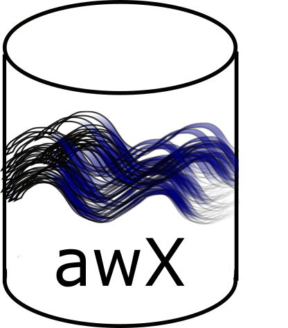

‘Conducting research is a bit like parenting. Raising a child involves a lot of cleaning and tidying, setting standards, and maintaining order, all of which goes completely unnoticed and for which the parent receives absolutely no credit.
Similarly, producing a bright, shiny result from the raw beginnings of a research project involves a lot of work that is almost never seen or acknowledged.'
-Paul Murrell ‘Introduction to Data Technologies’ (Emphasis Added)
‘The database upgrade should be highest priority…
If this project fails you might as well send everybody home.'
-Ernie Pizzuto (Former Supervising EA, Monitoring and Assessment Program)
# GET Request to Start Import from Local Server to WQX Web
base = 'https://cdx.epa.gov/WQXWeb/api/StartImport?importConfigurationId='
file_id = fileID[0]
end = 'fileType=XLSX&' \
'newOrExistingData=0&' \
'uponCompletion=0&' \
'uponCompletionCondition=0&' \
'worksheetsToImport=1&' \
'ignoreFirstRowOfFile=true'
import_uri = base+config_id+'&fileId='+file_id+'&'+end
dataset_id = []
wqx_request('GET', user_id, user_key, import_uri, None, dataset_id)
 awX is a data management system for storing, retrieving and exploring ambient water data collected by CT DEEP with a goal of providing a fluid data exchange with staff and the public to facilitate and support science-based environmental decision making
In time the system will support ambient water quality, continuous water quality (e.g. temp / conductivity / DO / flow), and stream connectivity (trail camera) data.
-- SQL Query Joining Data from Different Schemas
-- (awqx DB & cont DB)
SELECT temperature.probeID,temperature.staSeq,
stations.locationName, stations.subBasin,
temperature.result,temperature.uom
FROM cont.temperature
JOIN awqx.stations ON stations.staSeq = temperature.staSeq
WHERE temperature.staSeq = 15796;
Reusuable components under one umbrella in different schemas
// Import results directly from DB web service
var strt = 'https://www.waterqualitydata.us/data/'
var rsrc = 'Result/search?'
var styp = 'siteType=Stream&'
var orgn = 'organization=CT_DEP01_WQX&'
var chrt = 'characteristicName=Specific%20conductance&'
var rtpf = 'mimeType=csv&zip=no&dataProfile=resultPhysChem&providers=STORET'
var rurl = strt + rsrc + styp + orgn + chrt + rtpf
// 'https://www.waterqualitydata.us/data/Result/search?siteType=Stream&organization=CT_DEP01_WQX&characteristicName=Specific%20conductance&mimeType=csv&zip=no&dataProfile=resultPhysChem&providers=STORET'
Customizable query to get specific results